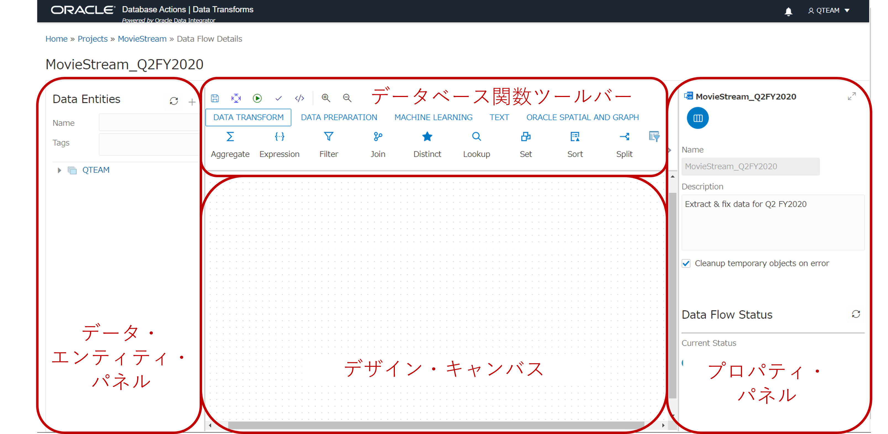

はじめに
Data Transformsは、Autonomous Databaseに組み込まれているデータ統合ツールです。Database Actionsからアクセス可能で、異種のソースからAutonomous Databaseにデータをロードして変換するためのツールです。ドラッグアンドドロップ、ノーコードで簡単に操作できます。データウェアハウスの構築や分析アプリケーションへのデータ供給など、あらゆるデータ統合のニーズに対応できます。
Data TransformsはOracle Data Integratorをベースにしています。オンプレミスおよびOCIの両方で、多くのお客様において高性能なデータ統合アーキテクチャとして証明されている、ELT(Extract/Load/Transform)手法を使用しています。
本章ではAutonomous Databaseの付属ツールであるData Transformsを用いて、少ない労力でデータを変換する方法を紹介します。
所要時間 : 約60分
前提条件 :
- ADBインスタンスが構成済みであること
※ADBインタンスを作成方法については、本チュートリアルの 101:ADBインスタンスを作成してみよう を参照ください。 - 構成済みのADBインスタンスへの接続が可能であること
-
下記リンクからダウンロードできるMovie Sales 2020.csv(売上実績のサンプルデータ)がローカルPC上にあること
目次：
1. 事前準備
実際にData Transformsを使用する前に、起動したADBインスタンスから新しいユーザー(QTEAM)を作成し、本チュートリアルで使用するサンプルデータ(Movie Sales 2020.csv)をロードします。
次の手順に従って、QTEAMユーザーを作成します。すでに作っている場合は、ステップ2に進んでください。
-
下記のリンクを参考に、QTEAMユーザーを作成します。
分析用のデータベース・ユーザーを作成しよう(Database Actions)*ユーザーを作成の際に、付与されたロールから以下の2つのユーザーロールを、以下の画像のように有効にします。
・DWROLE
・DATA_TRANSFORMS_USER※［付与済］と［デフォルト］の両方のボックスにチェックをつけてください。
-
QTEAMユーザーが作成されたことを確認したら、QTEAMユーザーカードの右下にある新しいタブで開くアイコン(赤枠)をクリックして、QTEAMユーザーでログインし直します。
-
下記のリンク参考に、Movie Sales 2020.csvをロードします。
手元のPCからCSVデータをロードしてみよう
2. Data Transformsの起動
-
QTEAMユーザーでDatabase Actionsにログインした状態で、起動パッドを開きます。
-
Data Transforms(データ変換)の項目をクリックし、データベースのユーザー名(QTEAM)とパスワード(例: Welcome12345#)を入力します。
-
Data Transformsが立ち上がるまで、1～2分程度かかります。
ログインができると、ホーム画面はこのようになります。
3. Data Transformsを使ってみる
3-1. Autonomous Databaseへの接続
-
Data Transformsのメインページで、画面左のConnectionsをクリックします。デフォルトのConnectionがすでに設定されています。以下の画像のように、すでに作成したADBインスタンスの名前になっているかと思います。本チュートリアルではデフォルトのConnectionではなく、新規にConnectionを作成する手順を踏みたいので、Create Connectionをクリックしてください。
-
Create Connectionに、必要な情報を入力していきます。
・Name: MovieStream
・Connection Type: Oracle
とし、Nextを押します。 -
Use Credential Fileのトグルをオンにして有効にし、ウォレットファイルを選択します。サービス(データベース名_low, 例:atp01_low)を選び、ユーザーとパスワードを入力します。
Test Connectionを押して、接続テストをします。成功したら、以下のような通知が画面右上に表示されます。 -
接続に成功したのを確認したら、Createをクリックして、Autonomous Databaseへの接続を作成します。
-
Data Transformsを使用している間、操作に関する通知のうち、重要なものが記載されます。これらの通知を表示するには、画面上部のベルのアイコンをクリックします。
3-2. データベース内のデータをインポートする
-
ここで、QTEAMのスキーマにある表をインポートする必要があります。Data Entities(画面左)、Import Data Entitiesの順にクリックします。
-
以下のようなダイアログが表示されます。データをロードするConnection名とスキーマ名を入力し、Startをクリックします。インポートのジョブの通知が表示されます。ジョブが終了するまでには数分かかります。
-
インポートされたか表示されます(ジョブが終了するまで数分待ち、表示されない場合は更新してください)。
しばらくすると、movie_sales_2020がリストされます。必要に応じて、画面左下のFiltersで検索をかける(例: Nameにmoviesと入力)こともできます。
リストされた表の右側にある3つの点をクリックし、Previewを選択します。 -
2020年の全ての月のデータがありますが、本チュートリアルでは、第2四半期のデータのみを分析します。
表の中身を見ると、DAYの値が大文字のものもあれば、最初の1文字のみ大文字のものもあります。これは、システムにデータをロードする時によく起こることで、データのエラーを修正する必要があります。そのため、データの変換機能がAutonomous Data Warehouseに組み込まれていることは、利便性の上で非常に重要です。画面右上の×をクリックして、プレビュー画面を閉じます。
3-3. Data Flowを作成する
-
Projects(画面左)をクリックし、Create Data Flowをクリックします。
-
Data Transformsのツールでは、Data FlowはProjectsの中で構成されています。まだどちらも作っていないため、表示されるダイアログで1度に両方を定義することができます。ダイアログで以下のように指定し、Createをクリックします。
・Name: MovieStream_Q2FY2020
・Create new Project ラジオボタンがすでに選択されていると思われます。
・Project Name: MovieStream
・Description: Extract & fix data for Q2 FY2020 -
続いて、Add a Schemaを入力する画面が出てきます。これは、自動で以下のように入力されるので、特に変更せずにOKボタンをクリックしてください。
-
Data Flowの詳細画面が表示されます。以下のように、画面は大きく4つのセクションに分かれています。

ここからは、次のようにData Flowを定義します。
・MOVIE_SALES_2020にフィルタを適用して、Q2以外の月のデータを削除します。
・DAY列におけるエラーを修正します。
・結果を、新しい表のMOVIE_SALES_2020Q2に適用します。
-
次の手順で、Data Flowを構築します。
-
画面左側のData Entitiesの上部にある更新ボタン(円形矢印)をクリックします。
-
QTEAMスキーマを展開して、表のリストを表示します。
-
表示されたリストから、MOVIE_SALES_2020をクリックします。
-
MOVIE_SALES_2020をキャンバスにドラッグアンドドロップします。
-
ツール・パレットから、DATA TRANSFORMタブをクリックします.
-
フィルタをキャンバスにドラッグアンドドロップします。
-
キャンバスに表示されているフィルタをクリックして選択します。
-
画面右側のプロパティの部分で、名前をQ2_Onlyと入力します。
-
キャンバス上で、MOVIE_SALES_2020をクリックします。
-
MOVIE_SALES_2020の右側の矢印を引き延ばして、フィルタに接続します。
-
-
上記の手順が完了したら、キャンバス上でフィルタを選択します。
-
次に、フィルタのプロパティを定義します。フィルタを選択した状態でフィルタのConditionをクリックし、編集ボタン(鉛筆マーク)をクリックします。
-
表示されたエディターで、フィルタの条件を完成させます。以下の作業をエディターで行います。
-
Sourcesのタブで、表を展開します。
-
列MONTHをExpressionにドラッグアンドドロップします。
-
以下の式を追加します。
in ('April','May','June')
-
-
このステップでは、列 MOVIE_SALES_2020.DAYのデータのエラーを修正します。
-
ツール・パレットで、DATA PREPARATIONタブをクリックします。
-
Data Cleanseをキャンバスにドラッグアンドドロップします。
-
先ほど作成したフィルタをクリックし、そこから Data Cleanseまで矢印を引き延ばします。
-
Data Cleanseをクリックして選択します。
-
Nameに”Fix_AllCap_Days”、Descriptionに”Convert all values in column DAY to Title Case.”を入力します。
-
-
右上の拡大ボタンをクリックします。
-
表示されたプロパティ画面の中央の、Attributesタブをクリックします。
-
MOVIE_SALES_2020.DAY列のデータから、先頭と末尾の空白を削除し、Title Case(最初の1文字のみを大文字)に変換し、データを修正する必要があります。以下のように、オプションを選択してください。
-
完了したら、右上の折りたたみボタン(2本の斜めの矢印マーク)をクリックして、プロパティを閉じます。
-
最後に、フィルタリングおよび修正後のデータをロードするための表を作成します。
Data Cleans(Fix_AllCap_Days)を選択し、枠の右上にあるグリッド状の表のアイコンをクリックします。
-
以下のような表作成のダイアログが表示されます。表の名前をMOVIE_SALES_2020Q2と指定します。(末尾がQ2であることを確認して下さい。)Aliasの入力は特に変更せずに、Saveをクリックします。
-
MOVIE_SALES_2020Q2を選択し、画面右側のプロパティから拡張ボタンをクリックします。
-
展開されたプロパティには、様々なタブがあります。デフォルトではAttributesが開かれていますが、以下のようにColumn Mappingタブをクリックします。
-
このData Flowをまだ実行しておらず、表は存在しないので、プレビューで見るものは何もありません
Optionsを選択して、次のようなダイアログを表示させます。表がまだ存在しないので、Create target tableがTrueになっていることを確認してください。
-
右上の折りたたみボタンをクリックします。
Data Flowのメイン画面に戻り、完成したData Flowを見ることができます。
-
Data Flowを実行します。
-
Save(フロッピーディスクのアイコン)をクリックします。
-
実行ボタン(緑色の三角のアイコン)をクリックします。
これまでのステップを完了すると、4月、5月、6月のデータのみを持つ表である、MOVIE_SALES_2020Q2が作成されます。日付は全て、最初の1文字のみ大文字に変更されています。
-
3-4. Jobの詳細を確認する
-
Data Flowを実行すると、以下のような画面が出ます。
ここでOKボタンを押しても構いません。また、表示されているリンクを踏むと、作成したJobの詳細画面に遷移し、データ変換のプロセスを見ることができます。
この画面では、Jobが2つのステップで実装されていることが分かります。
・Create target table
・Insert new rows
-
Insert new rows-Load MOVIE_SALES_2020Q2のリンクを押すと、画面右側にこのステップの詳細を示すパネルが表示されます。上部にあるTarget Connectionタブを押すと、Data Flowの各ステップがどのように実装されたかが分かります。
・Filter Q2_2020は、WHERE句で実装されています。
MONTH IN (‘April’,’May’,’June’)・Data Cleanse操作のFix_AllCap_Daysは、INITCAP(TRIM(MOVIE_SALES_2020.DAY))で実装されています。
-
Closeをクリックして、画面左上のパンくずリストのJobsから、Data Transformsのメインページに戻ってください。
おわりに
本チュートリアルではData Transformsを使って、サンプルデータをトリミングしたり、修正したりしました。Data Transformsを使えば、Autonomous Databaseにすでにあるデータを簡単に変換できることが体験できたかと思います。また、他のソースからデータをロードして変換することも可能です。データ変換のためにSQL文を書いたり、外部のデータ統合ツールを使用する必要はありません。
参考資料
-
LiveLabs Oracle Data Integrator Web Edition - Intro to Data Transforms
このLivelabsのLab5のTask4, 5では、本チュートリアルでは行わなかったWork Flowやスケジュールの作成方法に触れていますので、ご興味のある方はお試しください。
-
Oracle Blogs, Introducing Data Transforms: Built in Data Integration for Autonomous Database
以上で、この章は終了です。
次の章にお進みください。